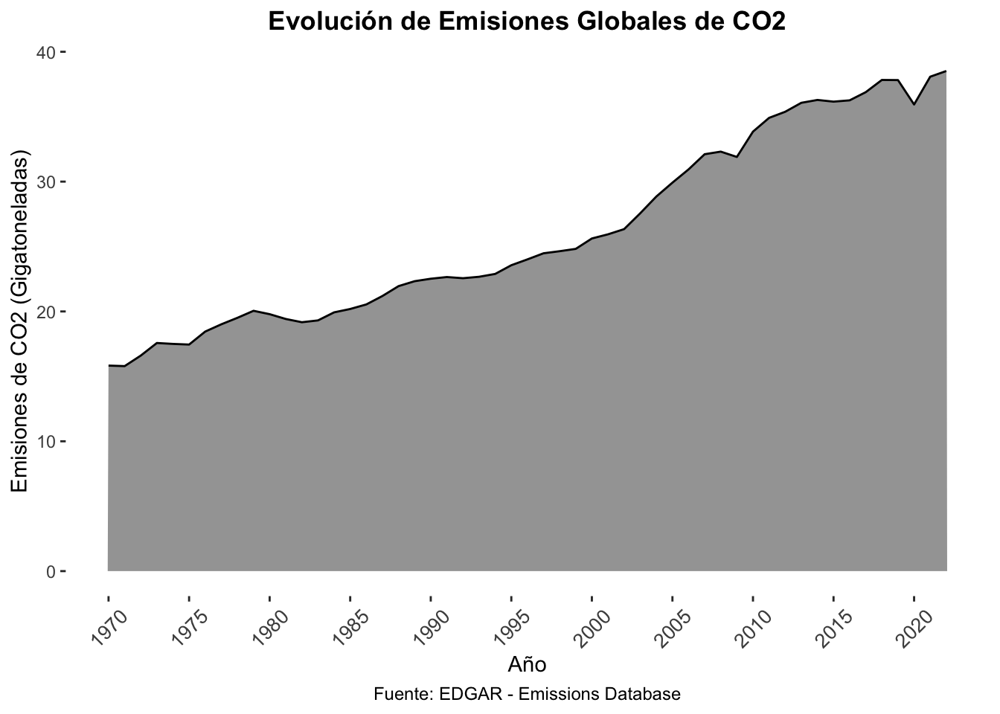
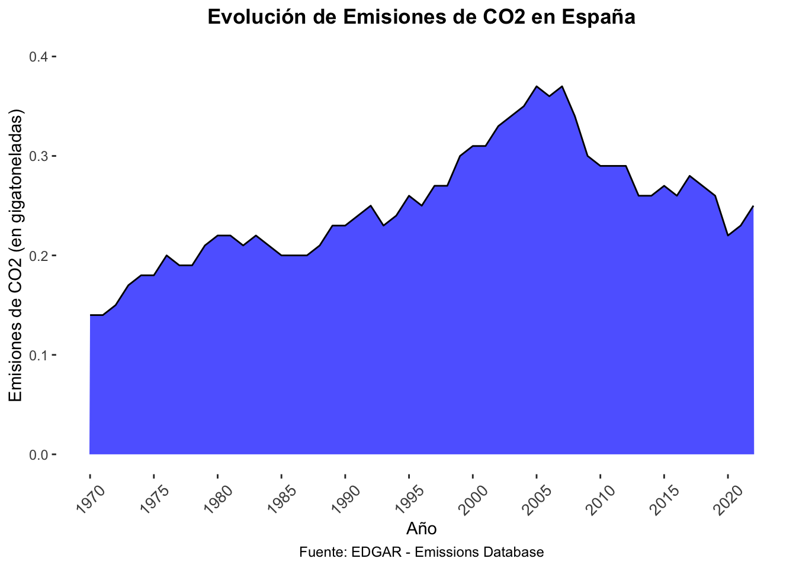
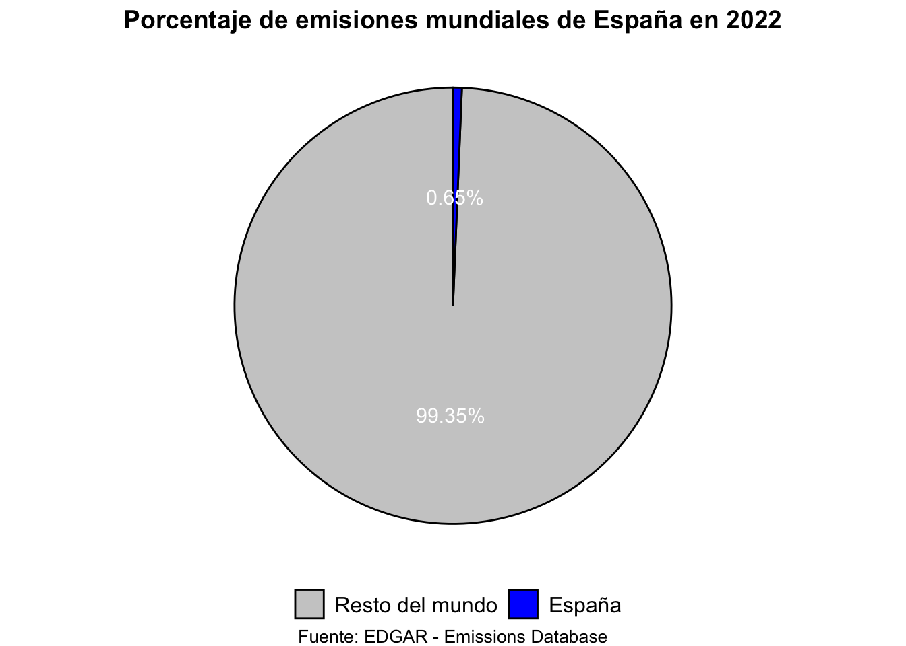
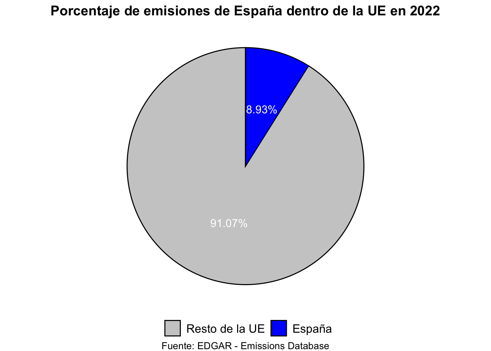
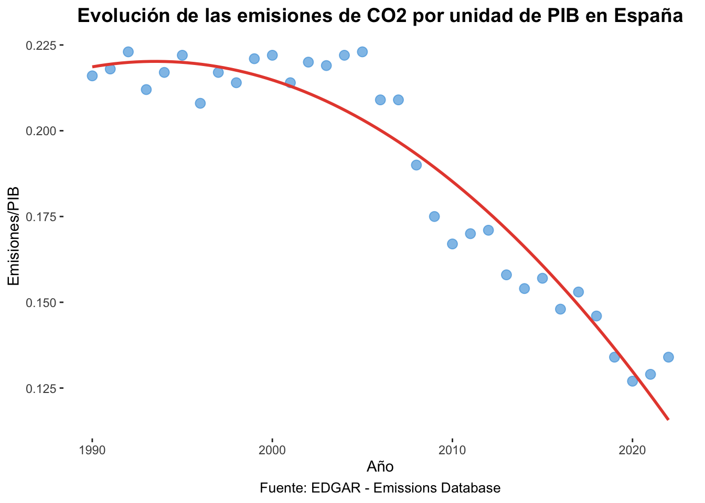
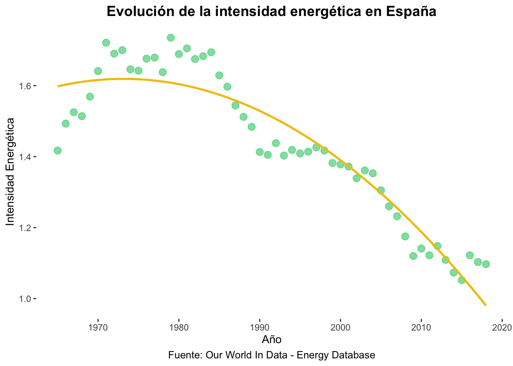
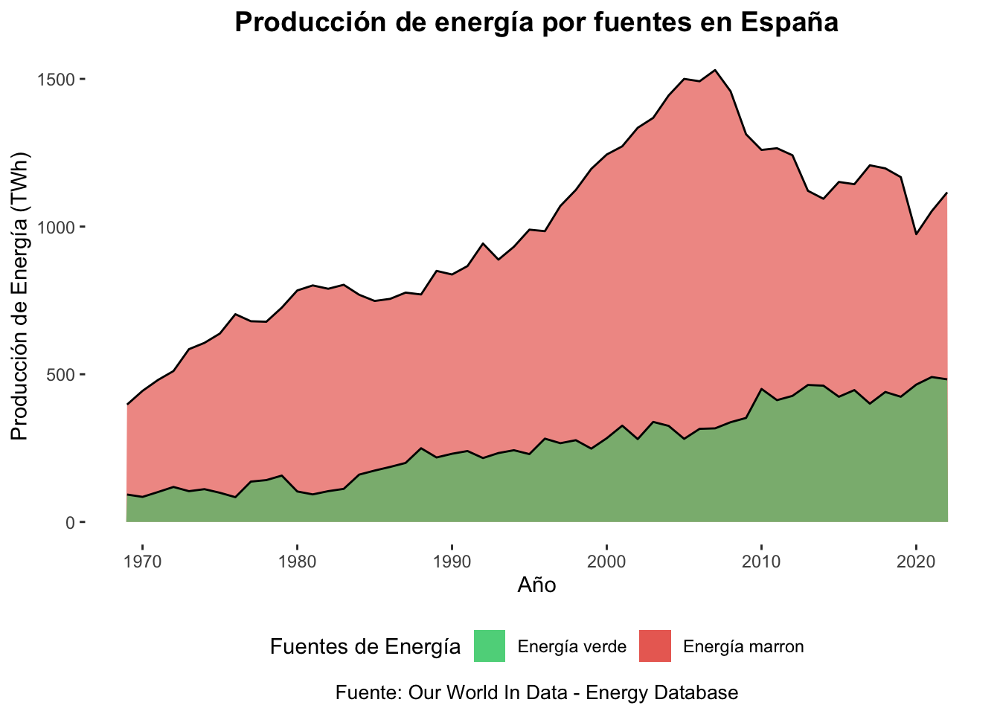
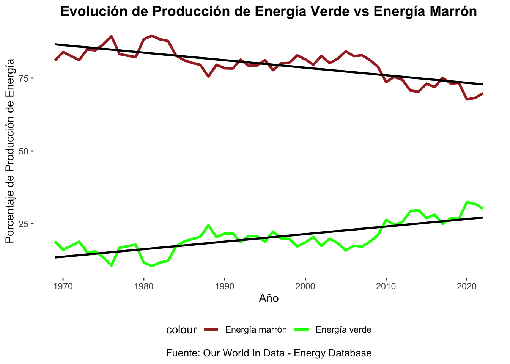
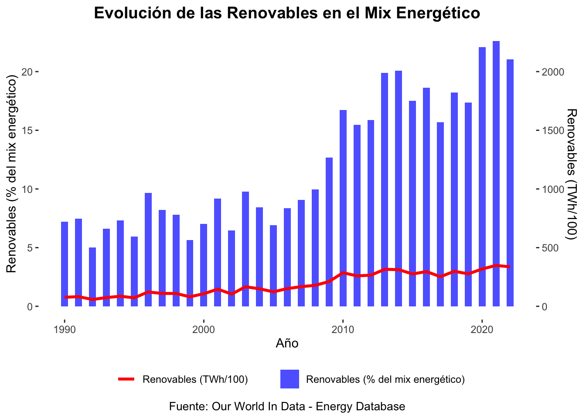

Análisis de las emisiones globales de CO2 y la producción energética, identificando la contribución de España al cambio climático y la transición energética.
¡Hola! Soy Alessio Di Gennaro, estudiante del grado de Economía en la Universidad de Valencia, y me complace presentar este trabajo final individual para la asignatura “Programación y manejo de datos en la era del Big Data”.
El trabajo consiste en un análisis gráfico sobre algunas de las variables más relevantes en el campo de la economía medioambiental, centrándose en las emisiones de CO2 y la producción energética, destacando la contribución de España al cambio climático y su papel en la transición hacia fuentes de energía más sostenibles.
La elección de esta temática surge de mi interés en comprender la relación entre la actividad económica y su impacto en el medio ambiente, así como en explorar cómo España contribuye a los desafíos globales relacionados con el cambio climático y la transición hacia fuentes de energía más limpias.
A lo largo de este trabajo, utilizo diversas fuentes de datos, incluyendo la base de datos de emisiones EDGAR y la base de datos de energía de Our World In Data. Estas fuentes proporcionan información detallada sobre las emisiones de CO2, la producción de energía y otros indicadores ambientales a nivel global y por países. Las definiciones y procesos utilizados se encuentran detallados en la sección de “Datos, Metodología y Definiciones”.
Te invito a explorar las secciones siguientes, donde analizo la evolución de las emisiones globales, el papel de España en el cambio climático, la relación entre las emisiones de CO2 y el Producto Interno Bruto (PIB), la intensidad energética y la producción de energía por fuentes en España desde 1990 hasta la fecha.
En este trabajo se han utilizado diversas fuentes de datos relacionadas con las emisiones de CO2, la producción de energía y otros indicadores ambientales. Las principales bases de datos empleadas fueron:
Our World In Data - Energy Database: Esta base de datos proporciona información detallada sobre la producción de energía, incluyendo datos específicos sobre la producción de energía verde, consumo de combustibles fósiles y energía nuclear a nivel mundial y por países.
EDGAR - Emissions Database: Base de datos que ofrece una amplia gama de información sobre las emisiones de gases de efecto invernadero, desglosadas por sector y país.
Definiciones:
Emisiones de CO2: Emisiones de dióxido de carbono provenientes de diferentes sectores como la agricultura, industria, transporte, entre otros, expresadas en gigatoneladas por año.
Producción energética: Producción de energía a partir de diversas fuentes, incluyendo combustibles fósiles, energía renovable y nuclear, presentando los datos en terawatt-hours (TWh).
Ratio CO2/PIB: Relación entre las emisiones de CO2 y el Producto Interno Bruto (PIB) como un indicador de la eficiencia ambiental y el desarrollo económico.
Intensidad energética: Medida que muestra la relación entre el consumo de energía por unidad de PIB, reflejando la eficiencia energética en relación al crecimiento económico.
Estas definiciones se utilizaron para analizar la evolución de las emisiones de CO2, la producción de energía y la relación de España con estos indicadores a lo largo del tiempo.
1.1. Emisiones de gases de efecto invernadero (Stock mundial)
Las emisiones globales de dióxido de carbono (CO2) han experimentado una evolución significativa a lo largo de los años. La gráfica muestra la tendencia, destacando cómo las emisiones han fluctuado en gigatoneladas por año. Este análisis se basa en datos recopilados por la base de datos EDGAR - Emissions Database.
Código
p1 <-ggplot(world_emissions, aes(x = Year, y = world_total_gt)) +geom_area(alpha =0.9, fill ="#999999", color ="black") +labs(title ="Evolución de Emisiones Globales de CO2",x ="Año",y ="Emisiones de CO2 (Gigatoneladas)",caption ="Fuente: EDGAR - Emissions Database") +theme_tufte(base_family ="Arial") +theme(plot.title =element_text(face ="bold", hjust =0.5),plot.caption =element_text(size =9, hjust =0.5),axis.text.x =element_text(angle =45, hjust =0.5,vjust =0.5, size =10, face ="plain")) +scale_x_continuous(breaks =seq(min(spain_emissions$Year), max(spain_emissions$Year), by =5))p1

1.2. Principales países emisores en 2022 (en % sobre el total)
En el año 2022, los países que más destacaron como los principales emisores fueron China, EE.UU., la Unión Europea, India y Rusia. La siguiente tabla ofrecen una perspectiva visual de la distribución porcentual de las emisiones de estos países con respecto al total mundial.
Código
df_emisores <- world_emissions %>%left_join(china_emissions) %>%left_join(usa_emissions) %>%left_join(eu27_emissions) %>%left_join(india_emissions) %>%left_join(russia_emissions) %>%filter(Year ==2022) %>%mutate(China =round((china_total_gt/world_total_gt)*100 ,2)) %>%mutate(USA =round((usa_total_gt/world_total_gt)*100 ,2)) %>%mutate(EU =round((eu27_total_gt/world_total_gt)*100 ,2)) %>%mutate(India =round((india_total_gt/world_total_gt)*100 ,2)) %>%mutate(Russia =round((russia_total_gt/world_total_gt)*100 ,2)) %>%select(Year, China, USA, EU, India, Russia)df_emisores_longer <- df_emisores %>%pivot_longer(cols =-Year, names_to ="Country", values_to ="Percentage") df_bandera <-data.frame(Country =c("China", "USA", "EU", "India", "Russia"),Bandera =c("https://upload.wikimedia.org/wikipedia/commons/thumb/f/fa/Flag_of_the_People%27s_Republic_of_China.svg/320px-Flag_of_the_People%27s_Republic_of_China.svg.png","https://upload.wikimedia.org/wikipedia/en/thumb/a/a4/Flag_of_the_United_States.svg/320px-Flag_of_the_United_States.svg.png","https://upload.wikimedia.org/wikipedia/commons/thumb/b/b7/Flag_of_Europe.svg/320px-Flag_of_Europe.svg.png","https://upload.wikimedia.org/wikipedia/en/thumb/4/41/Flag_of_India.svg/320px-Flag_of_India.svg.png","https://upload.wikimedia.org/wikipedia/en/thumb/f/f3/Flag_of_Russia.svg/320px-Flag_of_Russia.svg.png" ))colores <-c("#e74c3c", "#3498db", "#2ecc71", "#e67e22", "#95a5a6") df_emisores_longer <- df_emisores_longer %>%left_join(df_bandera, by ="Country") %>%select(-Year)p2_tabla_paises <-gt(df_emisores_longer) %>% gtExtras::gt_plt_dot(column = Percentage, category_column = Country, palette = colores ) %>% gtExtras::gt_theme_nytimes() %>%tab_header(title ="Principales países emisores en 2022",subtitle ="Porcentaje de emisiones de CO2 sobre el mundo") %>%cols_width(`Percentage`~px(100), 3~px(30)) %>% gtExtras::gt_img_rows(columns = Bandera, img_source ='web') %>%tab_source_note(source_note ="Fuente: EDGAR - Emissions Database") %>%cols_label(Country ="País",Percentage ="Porcentaje")p2_tabla_paises
Principales países emisores en 2022
Porcentaje de emisiones de CO2 sobre el mundo
País
Porcentaje
Bandera
2022
China
32.89
USA
12.59
EU
7.27
India
6.98
Russia
4.96
Fuente: EDGAR - Emissions Database
2. Papel de España en el cambio climático
2.1. Evolución de emisiones de España
La evolución de las emisiones de CO2 en España muestra cambios a lo largo del tiempo. La gráfica ilustra cómo las emisiones han variado en gigatoneladas por año desde 1990, proporcionando una visión general de la contribución de España al cambio climático.
Código
p3 <-ggplot(spain_emissions, aes(x = Year, y = spain_total_gt)) +geom_area(alpha =0.7, fill ="blue", color ="black") +labs(title ="Evolución de Emisiones de CO2 en España",x ="Año",y ="Emisiones de CO2 (en gigatoneladas)",caption ="Fuente: EDGAR - Emissions Database") +theme_tufte(base_family ="Arial") +theme(plot.title =element_text(face ="bold", hjust =0.5),plot.caption =element_text(size =9, hjust =0.5),axis.text.x =element_text(angle =45, hjust =0.5, vjust =0.5, size =10, face ="plain")) +scale_x_continuous(breaks =seq(min(spain_emissions$Year), max(spain_emissions$Year), by =5)) +coord_cartesian(ylim =c(0, 0.4))p3

2.2. Emisiones de España actuales (como % de la UE y cómo % del mundo)
En este apartado se calcula, para el año 2022, el porcentaje específico que representaron las emisiones de España tanto de las emisiones totales de la Unión Europea como del total mundial, para poder determinar la contribución de España a las emisiones en términos relativos.
Código
df_porcentajes <- world_emissions %>%left_join(eu27_emissions) %>%left_join(spain_emissions) %>%filter(Year ==2022) %>%mutate(spain_of_EU =round((spain_total_gt/eu27_total_gt)*100, 2)) %>%mutate(spain_of_world =round((spain_total_gt/world_total_gt)*100, 2)) %>%select(Year, spain_of_world, spain_of_EU)df_spain_world <- df_porcentajes %>%mutate(rest_of_world =100- spain_of_world) %>%select(rest_of_world, spain_of_world, Year) %>%pivot_longer(cols =-Year, names_to ="Categoria", values_to ="Porcentaje")df_spain_ue <- df_porcentajes %>%mutate(rest_of_EU =100- spain_of_EU) %>%select(rest_of_EU, spain_of_EU, Year) %>%pivot_longer(cols =-Year, names_to ="Categoria", values_to ="Porcentaje")p4 <-ggplot(df_spain_world, aes(x ="", y = Porcentaje, fill = Categoria)) +geom_bar(stat ="identity", width =0.01, color ="black") +coord_polar("y", start =0) +geom_text(aes(label =paste0(round(Porcentaje, 2), "%")), position =position_stack(vjust =0.5), size =4, color ="white") +geom_text(data =subset(df_spain_world, Categoria =="España"),aes(x =1.5, y = Porcentaje +2, label =paste0(round(Porcentaje, 2), "%")),size =4, color ="black") +labs(title ="Porcentaje de emisiones mundiales de España en 2022",fill ="Categoría") +scale_fill_manual(values =c("#CCCCCC", "blue"),labels =c("Resto del mundo", "España")) +theme_void() +theme(legend.position ="bottom", plot.title =element_text(hjust =0.5, size =14, face ="bold"),legend.text =element_text(size =12),legend.title =element_blank(),plot.caption =element_text(hjust =0.5, size =10)) +labs(caption ="Fuente: EDGAR - Emissions Database")p4p5 <-ggplot(df_spain_ue, aes(x ="", y = Porcentaje, fill = Categoria)) +geom_bar(stat ="identity", width =0.01, color ="black") +coord_polar("y", start =0) +geom_text(aes(label =paste0(round(Porcentaje, 2), "%")), position =position_stack(vjust =0.5), size =4, color ="white") +labs(title ="Porcentaje de emisiones de España dentro de la UE en 2022",fill ="Categoría") +scale_fill_manual(values =c("#CCCCCC", "blue"),labels =c("Resto de la UE", "España")) +theme_void() +theme(legend.position ="bottom", plot.title =element_text(hjust =0.5, size =14, face ="bold"),legend.text =element_text(size =12),legend.title =element_blank(),plot.caption =element_text(hjust =0.5, size =10)) +labs(caption ="Fuente: EDGAR - Emissions Database") p5


De esta manera podemos concluir que las emisiones de España representan menos del 1% de las emisiones mundiales y cerca del 9 % con respecto a la UE. Por tanto, en términos de política medioambiental, es importante entender que el rol de España en la lucha contra el cambio climático y la mitigación de los gases de efecto invernadero no es decisivo, por lo tanto, los responsables políticos deberían tomar medidas que equilibren la sostenibilidad ambiental con el crecimiento económico, reconociendo que el papel de España, aunque significativo, no es determinante a nivel global.
2.3. Evolución de la ratio CO2/PIB
La siguiente gráfica muestra la evolución de la ratio CO2/PIB de España desde 1990. Se observa que la ratio ha ido disminuyendo de forma constante desde entonces, lo que indica que España está siendo más eficiente en la producción de bienes y servicios con un menor impacto en el medio ambiente.
Código
ratio_spain <-read_excel(ruta_1, sheet ="Spain") %>%mutate(Total_CO2_GDP =as.numeric(Total_CO2_GDP)) %>%select(Year, Total_CO2_GDP) %>%filter(Year >=1990)p6 <-ggplot(ratio_spain, aes(x = Year, y = Total_CO2_GDP)) +geom_point(color ="#3498db", size =3, alpha =0.6) +geom_smooth(method ="lm", formula = y ~poly(x, 2), se =FALSE, color ="#e74c3c") +labs(title ="Evolución de las emisiones de CO2 por unidad de PIB en España",x ="Año",y ="Emisiones/PIB",caption ="Fuente: EDGAR - Emissions Database") +theme_tufte(base_family ="Arial") +theme(plot.title =element_text(hjust =0.5, size =14, face ="bold"),plot.caption =element_text(hjust =0.5, size =10))p6

2.4. Evolución de la intensidad energética (energía por unidad de PIB)
Por otra parte, en este apartado se observa la evolución de la intensidad energética de España, es decir, el consumo de energía por unidad de PIB, desde 1965. Se puede observar pues que la intensidad energética ha ido disminuyendo de forma constante desde entonces, lo que indica que España está utilizando la energía de forma más eficiente.
Código
ruta_2 <-"./data/owid-energy-data.xlsx"df_original <- rio::import(ruta_2)# Todos los datos de energía de españa desde 1965df_spain <- df_original %>%filter(country =="Spain") %>%filter(year >=1965)# GDP e intensidad energética (Consumo de energía por unidad de PIB $)options(scipen =999)df_gdp_energy <- df_spain %>%select(year, gdp, energy_per_gdp) %>%filter(!(year >=2019)) # Para quitar los NAp7 <-ggplot(df_gdp_energy, aes(x = year, y = energy_per_gdp)) +geom_point(color ="#2ecc71", size =3, alpha =0.6) +geom_smooth(method ="lm", formula = y ~poly(x, 2), se =FALSE, color ="#f1c40f") +labs(title ="Evolución de la intensidad energética en España",x ="Año",y ="Intensidad Energética",caption ="Fuente: Our World In Data - Energy Database") +theme_tufte(base_family ="Arial") +theme(plot.title =element_text(hjust =0.5, size =14, face ="bold"),plot.caption =element_text(hjust =0.5, size =10))p7

2.5. Producción de energía por fuentes. España 1990 - 2021
El mix energético de producción en España se ha diversificado a lo largo de los años. La siguiente gráfica de área resalta la contribución de fuentes de energía (renovables y no renovables) a la producción total de energía desde 1990 hasta la fecha.
Se define la “energía verde” como las fuentes de energía renovable (contando la hidraúlica) más la energía nuclear. Por otro lado, la “energía marrón” se define como todas aquellas procedentes de combustibles fósiles.
Código
# Datos de producción energética medido en terawatt-hoursdf_energy <- df_spain %>%select(year, fossil_fuel_consumption, low_carbon_consumption, primary_energy_consumption) %>%filter(year >=1969)# Definiciones:# low_carbon = Energías renovables (contando la hidraúlica) + Energía nuclear# fossil_fuel = Energías contaminantes de combustibles fósiles# primary_energy = Producción total de energía (suma de low + fossil)p8 <-ggplot(df_energy, aes(x = year)) +geom_area(aes(y = fossil_fuel_consumption, fill ="Energía marron"), alpha =0.6) +geom_line(aes(y = fossil_fuel_consumption), color ="black", size =0.5) +geom_area(aes(y = low_carbon_consumption, fill ="Energía verde"), alpha =0.6) +geom_line(aes(y = low_carbon_consumption), color ="black", size =0.5) +labs(title ="Producción de energía por fuentes en España",x ="Año",y ="Producción de Energía (TWh)",caption ="Fuente: Our World In Data - Energy Database",fill ="Fuentes de Energía") +scale_fill_manual(values =c("Energía marron"="#e74c3c", "Energía verde"="#2ecc71", "Producción Total"="#3498db"), guide =guide_legend(reverse =TRUE)) +theme_tufte(base_family ="Arial") +theme(legend.position ="bottom", plot.title =element_text(hjust =0.5, size =14, face ="bold"),plot.caption =element_text(hjust =0.5, size =10))p8

Se puede observar por tanto que la producción de energía a partir de combustibles fósiles ha ido disminuyendo de forma constante, mientras que la producción de energía verde ha ido aumentando.
2.6. Evolución de producción de energía verde vs energía marrón
En este apartado, se grafica la evolución del porcentaje total del mix energético que representa la producción de energía verde frente a la energía marrón a lo largo del tiempo. Se agregan las líneas tendenciales en la evolución de ambas categorías para ofrecer una visión comparativa.
Código
# Peso de cada tipo de energía dentro de la producción total de energíadf_share_energy <- df_spain %>%select(year, fossil_share_energy, low_carbon_share_energy) %>%mutate(total = fossil_share_energy + low_carbon_share_energy) %>%filter(year >=1969)# De aquí sale un gráfico del circuclo de proporciones# Están todos los tipos de energía condensados dentro de 2 categorías, pero puedo también ver el share de energías específicas como las renovables, por ejemplo (todos los tipos de _share_energy salen en el codebook)p9 <-ggplot(df_share_energy, aes(x = year)) +geom_line(aes(y = low_carbon_share_energy, color ="Energía verde"), size =1.2) +geom_smooth(aes(y = low_carbon_share_energy), method ="lm", formula = y ~ x, se =FALSE, color ="black") +geom_line(aes(y = fossil_share_energy, color ="Energía marrón"), size =1.2) +geom_smooth(aes(y = fossil_share_energy), method ="lm", formula = y ~ x, se =FALSE, color ="black") +scale_color_manual(values =c("Energía verde"="green", "Energía marrón"="brown")) +labs(title ="Evolución de Producción de Energía Verde vs Energía Marrón",x ="Año", y ="Porcentaje de Producción de Energía",caption ="Fuente: Our World In Data - Energy Database") +theme_tufte(base_family ="Arial") +theme(legend.position ="bottom", plot.title =element_text(hjust =0.5, size =14, face ="bold"),plot.caption =element_text(hjust =0.5, size =10)) p9

2.7. Evolución de las renovables dentro del mix energético
El siguiente gráfico muestra únicamente la evolución de producción de las renovables dentro del mix energético español desde 1990.
El papel de las energías renovables en el mix energético español ha ido creciendo, dado que se observa que la proporción de renovables en el mix energético ha ido aumentando de forma constante desde entonces, aunque aún se encuentra en niveles inferiores al 50%.
Código
df_renewables <- df_spain %>%select(year, renewables_share_energy, renewables_consumption) %>%filter(year >=1990)p10 <-ggplot(df_renewables, aes(x = year)) +geom_bar(aes(y = renewables_share_energy, fill ="Renovables (% del mix energético)"), stat ="identity", alpha =0.7, width =0.5) +geom_line(aes(y = renewables_consumption/100, color ="Renovables (TWh/100)"), size =1.2) +scale_fill_manual(values =c("Renovables (% del mix energético)"="blue")) +scale_color_manual(values =c("Renovables (TWh/100)"="red")) +scale_y_continuous(sec.axis =sec_axis(~.*100, name ="Renovables (TWh/100)")) +labs(title ="Evolución de las Renovables en el Mix Energético",x ="Año",y ="Renovables (% del mix energético)",caption ="Fuente: Our World In Data - Energy Database" ) +theme_tufte(base_family ="Arial") +theme(legend.position ="bottom", plot.title =element_text(hjust =0.5, size =14, face ="bold"),plot.caption =element_text(hjust =0.5, size =10)) +guides(fill =guide_legend(title =NULL), color =guide_legend(title =NULL))p10

Conclusión
A modo de cierre, el análisis de los gráficos permite extraer las siguientes conclusiones:
Las emisiones globales de CO2 han ido aumentando de forma constante.
España representa una proporción muy pequeña de las emisiones globales, siendo inferior al 1%. Por tanto, no es uno de los actores claves para los acuerdos medioambientales para combatir el cambio climático. Otros países, como China, Estados Unidos o la Unión Europea en su conjunto, sí lo son, ya que representan una proporción mucho mayor de las emisiones globales.
La producción de bienes y servicios en España se está volviendo mas eficiente en términos medioambientales, tanto en emisiones de CO2 como en consumo de energía.
La producción de energía de combustibles fósiles en España ha ido disminuyendo de forma constante, mientras que la producción de energía renovable y nuclear ha ido aumentando.
La proporción de renovables en el mix energético español ha ido aumentando de forma constante, aunque aún se encuentra en niveles inferiores al 50%.
En general, se observa que España está avanzando en la reducción de sus emisiones de CO2, siendo uno de los países líderes en la descarbonización de la economía siguiendo la tendencia de la UE. Sin embargo, sigue siendo imprescindible manetener los esfuerzos orientados hacia el aumento de la inversión en energías renovables, mejorando la eficiencia energética y reduciendo el consumo de combustibles fósiles de manera sostenible y de forma compatible con el crecimiento económico.
Referencias bibliográficas
EDGAR - Emissions Database for Global Atmospheric Research. Enlace
Del Palacio, G., Martín, E., Suárez, J., & Anido, F. (22 de septiembre de 2023). España se desengancha del carbón. El Mundo. Recuperado de Enlace
Ejecutar el código
---title: "Impacto ambiental en números: Emisiones de CO2 y Transición energética española"description: | Análisis de las emisiones globales de CO2 y la producción energética, identificando la contribución de España al cambio climático y la transición energética.author: - name: Alessio Di Gennaro affiliation: Universitat de València, Depto. Análisis Económico - Facultad de Economía affiliation-url: https://www.uv.esdate: 2024-01-20 #--categories: [trabajo BigData, transición energética, cambio climático] #--image: "./imagenes/imagen_01.png"title-block-banner: true #- {true, false, "green","#AA0000"}title-block-banner-color: "black" #-"#FFFFFF" toc-depth: 3smooth-scroll: trueformat: html: #backgroundcolor: "#F1F3F4" #embed-resources: true link-external-newwindow: true #css: ./assets/my_css_file.css #- CUIDADO!!!!code-tools: truecode-link: true---## Introducción¡Hola! Soy Alessio Di Gennaro, estudiante del grado de Economía en la Universidad de Valencia, y me complace presentar este trabajo final individual para la asignatura "Programación y manejo de datos en la era del Big Data". El trabajo consiste en un análisis gráfico sobre algunas de las variables más relevantes en el campo de la economía medioambiental, centrándose en las emisiones de CO2 y la producción energética, destacando la contribución de España al cambio climático y su papel en la transición hacia fuentes de energía más sostenibles.La elección de esta temática surge de mi interés en comprender la relación entre la actividad económica y su impacto en el medio ambiente, así como en explorar cómo España contribuye a los desafíos globales relacionados con el cambio climático y la transición hacia fuentes de energía más limpias.A lo largo de este trabajo, utilizo diversas fuentes de datos, incluyendo la base de datos de emisiones EDGAR y la base de datos de energía de Our World In Data. Estas fuentes proporcionan información detallada sobre las emisiones de CO2, la producción de energía y otros indicadores ambientales a nivel global y por países. Las definiciones y procesos utilizados se encuentran detallados en la sección de "Datos, Metodología y Definiciones".Te invito a explorar las secciones siguientes, donde analizo la evolución de las emisiones globales, el papel de España en el cambio climático, la relación entre las emisiones de CO2 y el Producto Interno Bruto (PIB), la intensidad energética y la producción de energía por fuentes en España desde 1990 hasta la fecha.```{r}#- Librerías utilizadas library(tidyverse)library(readxl)library(gt)library(gtExtras)library(knitr)library(kableExtra)library(ggplot2)library(patchwork)library(ggthemes)library(dplyr)library(plotly)library(openxlsx)library(countrycode)library(ggimage)library(gganimate)library(lubridate)```---## Datos, Metodología y DefinicionesEn este trabajo se han utilizado diversas fuentes de datos relacionadas con las emisiones de CO2, la producción de energía y otros indicadores ambientales. Las principales bases de datos empleadas fueron:- **Our World In Data - Energy Database**: Esta base de datos proporciona información detallada sobre la producción de energía, incluyendo datos específicos sobre la producción de energía verde, consumo de combustibles fósiles y energía nuclear a nivel mundial y por países.- **EDGAR - Emissions Database**: Base de datos que ofrece una amplia gama de información sobre las emisiones de gases de efecto invernadero, desglosadas por sector y país.Definiciones:- **Emisiones de CO2**: Emisiones de dióxido de carbono provenientes de diferentes sectores como la agricultura, industria, transporte, entre otros, expresadas en gigatoneladas por año.- **Producción energética**: Producción de energía a partir de diversas fuentes, incluyendo combustibles fósiles, energía renovable y nuclear, presentando los datos en terawatt-hours (TWh).- **Ratio CO2/PIB**: Relación entre las emisiones de CO2 y el Producto Interno Bruto (PIB) como un indicador de la eficiencia ambiental y el desarrollo económico.- **Intensidad energética**: Medida que muestra la relación entre el consumo de energía por unidad de PIB, reflejando la eficiencia energética en relación al crecimiento económico.Estas definiciones se utilizaron para analizar la evolución de las emisiones de CO2, la producción de energía y la relación de España con estos indicadores a lo largo del tiempo.---## 1. Overview de las emisiones globales```{r}# Data mungingruta_1 <-"./data/CO2_emissions_by_sector.xlsx"# Emisiones agregadas (En giga toneladas de CO2 por año)world_emissions <-read_excel(ruta_1, sheet ="World") %>%group_by(Year) %>%mutate(total =sum(Agriculture, Buildings, Power_industry, Transport,Fuel_exploitation, Industrial_combustion, Processes, Waste)) %>%mutate(world_total_gt =round (total/1e9, 2)) %>%select(Year, world_total_gt)eu27_emissions <-read_excel(ruta_1, sheet ="EU27") %>%group_by(Year) %>%mutate(total =sum(Agriculture, Buildings, Power_industry, Transport, Fuel_exploitation, Industrial_combustion, Processes , Waste)) %>%mutate(eu27_total_gt =round (total/1e9, 2)) %>%select(Year, eu27_total_gt)china_emissions <-read_excel(ruta_1, sheet ="China") %>%group_by(Year) %>%mutate(total =sum(Agriculture, Buildings, Power_industry, Transport, Fuel_exploitation, Industrial_combustion, Processes , Waste)) %>%mutate(china_total_gt =round (total/1e9, 2)) %>%select(Year, china_total_gt)usa_emissions <-read_excel(ruta_1, sheet ="USA") %>%group_by(Year) %>%mutate(total =sum(Agriculture, Buildings, Power_industry, Transport, Fuel_exploitation, Industrial_combustion, Processes)) %>%mutate(usa_total_gt =round (total/1e9, 2)) %>%select(Year, usa_total_gt)india_emissions <-read_excel(ruta_1, sheet ="India") %>%group_by(Year) %>%mutate(total =sum(Agriculture, Buildings, Power_industry, Transport, Fuel_exploitation, Industrial_combustion, Processes)) %>%mutate(india_total_gt =round (total/1e9, 2)) %>%select(Year, india_total_gt)russia_emissions <-read_excel(ruta_1, sheet ="Russia") %>%group_by(Year) %>%mutate(total =sum(Agriculture, Buildings, Power_industry, Transport, Fuel_exploitation, Industrial_combustion, Processes)) %>%mutate(russia_total_gt =round (total/1e9, 2)) %>%select(Year, russia_total_gt)spain_emissions <-read_excel(ruta_1, sheet ="Spain") %>%group_by(Year) %>%mutate(total =sum(Agriculture, Buildings, Power_industry, Transport, Fuel_exploitation, Industrial_combustion, Processes , Waste)) %>%mutate(spain_total_gt =round (total/1e9, 2)) %>%select(Year, spain_total_gt)```#### 1.1. **Emisiones de gases de efecto invernadero (Stock mundial)**Las emisiones globales de dióxido de carbono (CO2) han experimentado una evolución significativa a lo largo de los años. La gráfica muestra la tendencia, destacando cómo las emisiones han fluctuado en gigatoneladas por año. Este análisis se basa en datos recopilados por la base de datos EDGAR - Emissions Database.```{r, fig.align='center'}p1 <-ggplot(world_emissions, aes(x = Year, y = world_total_gt)) +geom_area(alpha =0.9, fill ="#999999", color ="black") +labs(title ="Evolución de Emisiones Globales de CO2",x ="Año",y ="Emisiones de CO2 (Gigatoneladas)",caption ="Fuente: EDGAR - Emissions Database") +theme_tufte(base_family ="Arial") +theme(plot.title =element_text(face ="bold", hjust =0.5),plot.caption =element_text(size =9, hjust =0.5),axis.text.x =element_text(angle =45, hjust =0.5,vjust =0.5, size =10, face ="plain")) +scale_x_continuous(breaks =seq(min(spain_emissions$Year), max(spain_emissions$Year), by =5))p1```#### 1.2. **Principales países emisores en 2022 (en % sobre el total)**En el año 2022, los países que más destacaron como los principales emisores fueron China, EE.UU., la Unión Europea, India y Rusia. La siguiente tabla ofrecen una perspectiva visual de la distribución porcentual de las emisiones de estos países con respecto al total mundial.```{r, fig.align='center'}df_emisores <- world_emissions %>%left_join(china_emissions) %>%left_join(usa_emissions) %>%left_join(eu27_emissions) %>%left_join(india_emissions) %>%left_join(russia_emissions) %>%filter(Year ==2022) %>%mutate(China =round((china_total_gt/world_total_gt)*100 ,2)) %>%mutate(USA =round((usa_total_gt/world_total_gt)*100 ,2)) %>%mutate(EU =round((eu27_total_gt/world_total_gt)*100 ,2)) %>%mutate(India =round((india_total_gt/world_total_gt)*100 ,2)) %>%mutate(Russia =round((russia_total_gt/world_total_gt)*100 ,2)) %>%select(Year, China, USA, EU, India, Russia)df_emisores_longer <- df_emisores %>%pivot_longer(cols =-Year, names_to ="Country", values_to ="Percentage") df_bandera <-data.frame(Country =c("China", "USA", "EU", "India", "Russia"),Bandera =c("https://upload.wikimedia.org/wikipedia/commons/thumb/f/fa/Flag_of_the_People%27s_Republic_of_China.svg/320px-Flag_of_the_People%27s_Republic_of_China.svg.png","https://upload.wikimedia.org/wikipedia/en/thumb/a/a4/Flag_of_the_United_States.svg/320px-Flag_of_the_United_States.svg.png","https://upload.wikimedia.org/wikipedia/commons/thumb/b/b7/Flag_of_Europe.svg/320px-Flag_of_Europe.svg.png","https://upload.wikimedia.org/wikipedia/en/thumb/4/41/Flag_of_India.svg/320px-Flag_of_India.svg.png","https://upload.wikimedia.org/wikipedia/en/thumb/f/f3/Flag_of_Russia.svg/320px-Flag_of_Russia.svg.png" ))colores <-c("#e74c3c", "#3498db", "#2ecc71", "#e67e22", "#95a5a6") df_emisores_longer <- df_emisores_longer %>%left_join(df_bandera, by ="Country") %>%select(-Year)p2_tabla_paises <-gt(df_emisores_longer) %>% gtExtras::gt_plt_dot(column = Percentage, category_column = Country, palette = colores ) %>% gtExtras::gt_theme_nytimes() %>%tab_header(title ="Principales países emisores en 2022",subtitle ="Porcentaje de emisiones de CO2 sobre el mundo") %>%cols_width(`Percentage`~px(100), 3~px(30)) %>% gtExtras::gt_img_rows(columns = Bandera, img_source ='web') %>%tab_source_note(source_note ="Fuente: EDGAR - Emissions Database") %>%cols_label(Country ="País",Percentage ="Porcentaje")p2_tabla_paises```---## 2. Papel de España en el cambio climático### 2.1. **Evolución de emisiones de España**La evolución de las emisiones de CO2 en España muestra cambios a lo largo del tiempo. La gráfica ilustra cómo las emisiones han variado en gigatoneladas por año desde 1990, proporcionando una visión general de la contribución de España al cambio climático.```{r, fig.align='center'}p3 <-ggplot(spain_emissions, aes(x = Year, y = spain_total_gt)) +geom_area(alpha =0.7, fill ="blue", color ="black") +labs(title ="Evolución de Emisiones de CO2 en España",x ="Año",y ="Emisiones de CO2 (en gigatoneladas)",caption ="Fuente: EDGAR - Emissions Database") +theme_tufte(base_family ="Arial") +theme(plot.title =element_text(face ="bold", hjust =0.5),plot.caption =element_text(size =9, hjust =0.5),axis.text.x =element_text(angle =45, hjust =0.5, vjust =0.5, size =10, face ="plain")) +scale_x_continuous(breaks =seq(min(spain_emissions$Year), max(spain_emissions$Year), by =5)) +coord_cartesian(ylim =c(0, 0.4))p3```### 2.2. **Emisiones de España actuales (como % de la UE y cómo % del mundo)**En este apartado se calcula, para el año 2022, el porcentaje específico que representaron las emisiones de España tanto de las emisiones totales de la Unión Europea como del total mundial, para poder determinar la contribución de España a las emisiones en términos relativos.```{r, fig.align='center'}df_porcentajes <- world_emissions %>%left_join(eu27_emissions) %>%left_join(spain_emissions) %>%filter(Year ==2022) %>%mutate(spain_of_EU =round((spain_total_gt/eu27_total_gt)*100, 2)) %>%mutate(spain_of_world =round((spain_total_gt/world_total_gt)*100, 2)) %>%select(Year, spain_of_world, spain_of_EU)df_spain_world <- df_porcentajes %>%mutate(rest_of_world =100- spain_of_world) %>%select(rest_of_world, spain_of_world, Year) %>%pivot_longer(cols =-Year, names_to ="Categoria", values_to ="Porcentaje")df_spain_ue <- df_porcentajes %>%mutate(rest_of_EU =100- spain_of_EU) %>%select(rest_of_EU, spain_of_EU, Year) %>%pivot_longer(cols =-Year, names_to ="Categoria", values_to ="Porcentaje")p4 <-ggplot(df_spain_world, aes(x ="", y = Porcentaje, fill = Categoria)) +geom_bar(stat ="identity", width =0.01, color ="black") +coord_polar("y", start =0) +geom_text(aes(label =paste0(round(Porcentaje, 2), "%")), position =position_stack(vjust =0.5), size =4, color ="white") +geom_text(data =subset(df_spain_world, Categoria =="España"),aes(x =1.5, y = Porcentaje +2, label =paste0(round(Porcentaje, 2), "%")),size =4, color ="black") +labs(title ="Porcentaje de emisiones mundiales de España en 2022",fill ="Categoría") +scale_fill_manual(values =c("#CCCCCC", "blue"),labels =c("Resto del mundo", "España")) +theme_void() +theme(legend.position ="bottom", plot.title =element_text(hjust =0.5, size =14, face ="bold"),legend.text =element_text(size =12),legend.title =element_blank(),plot.caption =element_text(hjust =0.5, size =10)) +labs(caption ="Fuente: EDGAR - Emissions Database")p4p5 <-ggplot(df_spain_ue, aes(x ="", y = Porcentaje, fill = Categoria)) +geom_bar(stat ="identity", width =0.01, color ="black") +coord_polar("y", start =0) +geom_text(aes(label =paste0(round(Porcentaje, 2), "%")), position =position_stack(vjust =0.5), size =4, color ="white") +labs(title ="Porcentaje de emisiones de España dentro de la UE en 2022",fill ="Categoría") +scale_fill_manual(values =c("#CCCCCC", "blue"),labels =c("Resto de la UE", "España")) +theme_void() +theme(legend.position ="bottom", plot.title =element_text(hjust =0.5, size =14, face ="bold"),legend.text =element_text(size =12),legend.title =element_blank(),plot.caption =element_text(hjust =0.5, size =10)) +labs(caption ="Fuente: EDGAR - Emissions Database") p5```De esta manera podemos concluir que las emisiones de España representan menos del 1% de las emisiones mundiales y cerca del 9 % con respecto a la UE. Por tanto, en términos de política medioambiental, es importante entender que el rol de España en la lucha contra el cambio climático y la mitigación de los gases de efecto invernadero no es decisivo, por lo tanto, los responsables políticos deberían tomar medidas que equilibren la sostenibilidad ambiental con el crecimiento económico, reconociendo que el papel de España, aunque significativo, no es determinante a nivel global.### 2.3. **Evolución de la ratio CO2/PIB **La siguiente gráfica muestra la evolución de la ratio CO2/PIB de España desde 1990. Se observa que la ratio ha ido disminuyendo de forma constante desde entonces, lo que indica que España está siendo más eficiente en la producción de bienes y servicios con un menor impacto en el medio ambiente.```{r, fig.align='center'}ratio_spain <-read_excel(ruta_1, sheet ="Spain") %>%mutate(Total_CO2_GDP =as.numeric(Total_CO2_GDP)) %>%select(Year, Total_CO2_GDP) %>%filter(Year >=1990)p6 <-ggplot(ratio_spain, aes(x = Year, y = Total_CO2_GDP)) +geom_point(color ="#3498db", size =3, alpha =0.6) +geom_smooth(method ="lm", formula = y ~poly(x, 2), se =FALSE, color ="#e74c3c") +labs(title ="Evolución de las emisiones de CO2 por unidad de PIB en España",x ="Año",y ="Emisiones/PIB",caption ="Fuente: EDGAR - Emissions Database") +theme_tufte(base_family ="Arial") +theme(plot.title =element_text(hjust =0.5, size =14, face ="bold"),plot.caption =element_text(hjust =0.5, size =10))p6```### 2.4. **Evolución de la intensidad energética (energía por unidad de PIB)** Por otra parte, en este apartado se observa la evolución de la intensidad energética de España, es decir, el consumo de energía por unidad de PIB, desde 1965. Se puede observar pues que la intensidad energética ha ido disminuyendo de forma constante desde entonces, lo que indica que España está utilizando la energía de forma más eficiente.```{r, fig.align='center'}ruta_2 <-"./data/owid-energy-data.xlsx"df_original <- rio::import(ruta_2)# Todos los datos de energía de españa desde 1965df_spain <- df_original %>%filter(country =="Spain") %>%filter(year >=1965)# GDP e intensidad energética (Consumo de energía por unidad de PIB $)options(scipen =999)df_gdp_energy <- df_spain %>%select(year, gdp, energy_per_gdp) %>%filter(!(year >=2019)) # Para quitar los NAp7 <-ggplot(df_gdp_energy, aes(x = year, y = energy_per_gdp)) +geom_point(color ="#2ecc71", size =3, alpha =0.6) +geom_smooth(method ="lm", formula = y ~poly(x, 2), se =FALSE, color ="#f1c40f") +labs(title ="Evolución de la intensidad energética en España",x ="Año",y ="Intensidad Energética",caption ="Fuente: Our World In Data - Energy Database") +theme_tufte(base_family ="Arial") +theme(plot.title =element_text(hjust =0.5, size =14, face ="bold"),plot.caption =element_text(hjust =0.5, size =10))p7```### 2.5. **Producción de energía por fuentes. España 1990 - 2021**El mix energético de producción en España se ha diversificado a lo largo de los años. La siguiente gráfica de área resalta la contribución de fuentes de energía (renovables y no renovables) a la producción total de energía desde 1990 hasta la fecha.Se define la "energía verde" como las fuentes de energía renovable (contando la hidraúlica) más la energía nuclear. Por otro lado, la "energía marrón" se define como todas aquellas procedentes de combustibles fósiles.```{r, fig.align='center'}# Datos de producción energética medido en terawatt-hoursdf_energy <- df_spain %>%select(year, fossil_fuel_consumption, low_carbon_consumption, primary_energy_consumption) %>%filter(year >=1969)# Definiciones:# low_carbon = Energías renovables (contando la hidraúlica) + Energía nuclear# fossil_fuel = Energías contaminantes de combustibles fósiles# primary_energy = Producción total de energía (suma de low + fossil)p8 <-ggplot(df_energy, aes(x = year)) +geom_area(aes(y = fossil_fuel_consumption, fill ="Energía marron"), alpha =0.6) +geom_line(aes(y = fossil_fuel_consumption), color ="black", size =0.5) +geom_area(aes(y = low_carbon_consumption, fill ="Energía verde"), alpha =0.6) +geom_line(aes(y = low_carbon_consumption), color ="black", size =0.5) +labs(title ="Producción de energía por fuentes en España",x ="Año",y ="Producción de Energía (TWh)",caption ="Fuente: Our World In Data - Energy Database",fill ="Fuentes de Energía") +scale_fill_manual(values =c("Energía marron"="#e74c3c", "Energía verde"="#2ecc71", "Producción Total"="#3498db"), guide =guide_legend(reverse =TRUE)) +theme_tufte(base_family ="Arial") +theme(legend.position ="bottom", plot.title =element_text(hjust =0.5, size =14, face ="bold"),plot.caption =element_text(hjust =0.5, size =10))p8```Se puede observar por tanto que la producción de energía a partir de combustibles fósiles ha ido disminuyendo de forma constante, mientras que la producción de energía verde ha ido aumentando.### 2.6. **Evolución de producción de energía verde vs energía marrón**En este apartado, se grafica la evolución del porcentaje total del mix energético que representa la producción de energía verde frente a la energía marrón a lo largo del tiempo. Se agregan las líneas tendenciales en la evolución de ambas categorías para ofrecer una visión comparativa.```{r, fig.align='center'}# Peso de cada tipo de energía dentro de la producción total de energíadf_share_energy <- df_spain %>%select(year, fossil_share_energy, low_carbon_share_energy) %>%mutate(total = fossil_share_energy + low_carbon_share_energy) %>%filter(year >=1969)# De aquí sale un gráfico del circuclo de proporciones# Están todos los tipos de energía condensados dentro de 2 categorías, pero puedo también ver el share de energías específicas como las renovables, por ejemplo (todos los tipos de _share_energy salen en el codebook)p9 <-ggplot(df_share_energy, aes(x = year)) +geom_line(aes(y = low_carbon_share_energy, color ="Energía verde"), size =1.2) +geom_smooth(aes(y = low_carbon_share_energy), method ="lm", formula = y ~ x, se =FALSE, color ="black") +geom_line(aes(y = fossil_share_energy, color ="Energía marrón"), size =1.2) +geom_smooth(aes(y = fossil_share_energy), method ="lm", formula = y ~ x, se =FALSE, color ="black") +scale_color_manual(values =c("Energía verde"="green", "Energía marrón"="brown")) +labs(title ="Evolución de Producción de Energía Verde vs Energía Marrón",x ="Año", y ="Porcentaje de Producción de Energía",caption ="Fuente: Our World In Data - Energy Database") +theme_tufte(base_family ="Arial") +theme(legend.position ="bottom", plot.title =element_text(hjust =0.5, size =14, face ="bold"),plot.caption =element_text(hjust =0.5, size =10)) p9```### 2.7. **Evolución de las renovables dentro del mix energético **El siguiente gráfico muestra únicamente la evolución de producción de las renovables dentro del mix energético español desde 1990. El papel de las energías renovables en el mix energético español ha ido creciendo, dado que se observa que la proporción de renovables en el mix energético ha ido aumentando de forma constante desde entonces, aunque aún se encuentra en niveles inferiores al 50%.```{r, fig.align='center'}df_renewables <- df_spain %>%select(year, renewables_share_energy, renewables_consumption) %>%filter(year >=1990)p10 <-ggplot(df_renewables, aes(x = year)) +geom_bar(aes(y = renewables_share_energy, fill ="Renovables (% del mix energético)"), stat ="identity", alpha =0.7, width =0.5) +geom_line(aes(y = renewables_consumption/100, color ="Renovables (TWh/100)"), size =1.2) +scale_fill_manual(values =c("Renovables (% del mix energético)"="blue")) +scale_color_manual(values =c("Renovables (TWh/100)"="red")) +scale_y_continuous(sec.axis =sec_axis(~.*100, name ="Renovables (TWh/100)")) +labs(title ="Evolución de las Renovables en el Mix Energético",x ="Año",y ="Renovables (% del mix energético)",caption ="Fuente: Our World In Data - Energy Database" ) +theme_tufte(base_family ="Arial") +theme(legend.position ="bottom", plot.title =element_text(hjust =0.5, size =14, face ="bold"),plot.caption =element_text(hjust =0.5, size =10)) +guides(fill =guide_legend(title =NULL), color =guide_legend(title =NULL))p10```---## ConclusiónA modo de cierre, el análisis de los gráficos permite extraer las siguientes conclusiones:- Las emisiones globales de CO2 han ido aumentando de forma constante.- España representa una proporción muy pequeña de las emisiones globales, siendo inferior al 1%. Por tanto, no es uno de los actores claves para los acuerdos medioambientales para combatir el cambio climático. Otros países, como China, Estados Unidos o la Unión Europea en su conjunto, sí lo son, ya que representan una proporción mucho mayor de las emisiones globales.- La producción de bienes y servicios en España se está volviendo mas eficiente en términos medioambientales, tanto en emisiones de CO2 como en consumo de energía.- La producción de energía de combustibles fósiles en España ha ido disminuyendo de forma constante, mientras que la producción de energía renovable y nuclear ha ido aumentando.- La proporción de renovables en el mix energético español ha ido aumentando de forma constante, aunque aún se encuentra en niveles inferiores al 50%.En general, se observa que España está avanzando en la reducción de sus emisiones de CO2, siendo uno de los países líderes en la descarbonización de la economía siguiendo la tendencia de la UE. Sin embargo, sigue siendo imprescindible manetener los esfuerzos orientados hacia el aumento de la inversión en energías renovables, mejorando la eficiencia energética y reduciendo el consumo de combustibles fósiles de manera sostenible y de forma compatible con el crecimiento económico.---## Referencias bibliográficas- EDGAR - Emissions Database for Global Atmospheric Research. [Enlace](https://edgar.jrc.ec.europa.eu)- Our World In Data - Energy Database. [Enlace](https://ourworldindata.org/energy)- Del Palacio, G., Martín, E., Suárez, J., & Anido, F. (22 de septiembre de 2023). España se desengancha del carbón. El Mundo. Recuperado de [Enlace](https://lab.elmundo.es/proceso-descarbonizacion-espana/index.html)